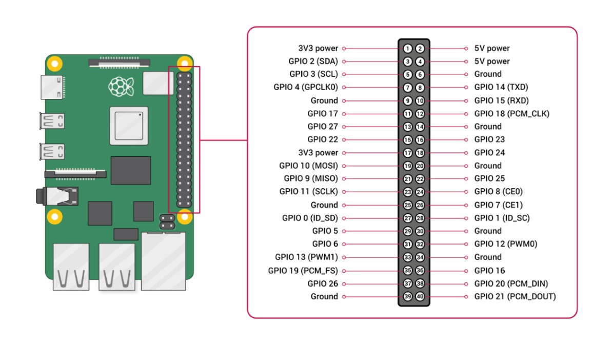
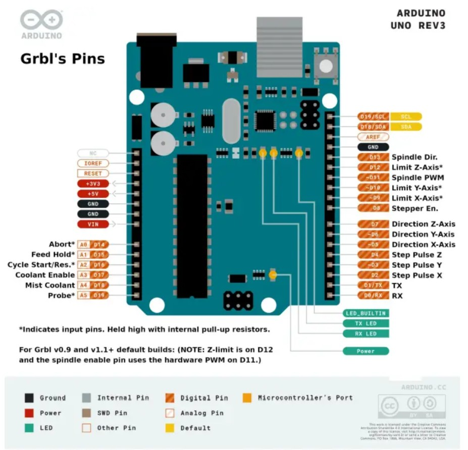
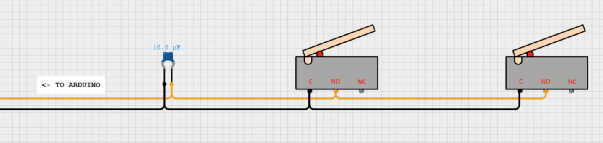
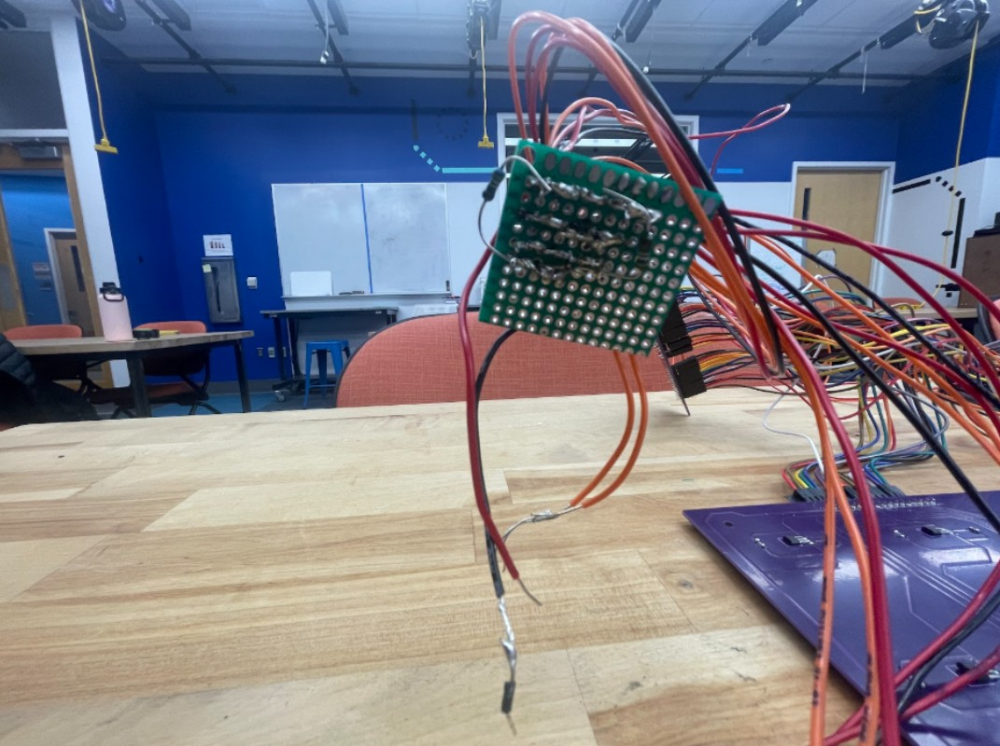
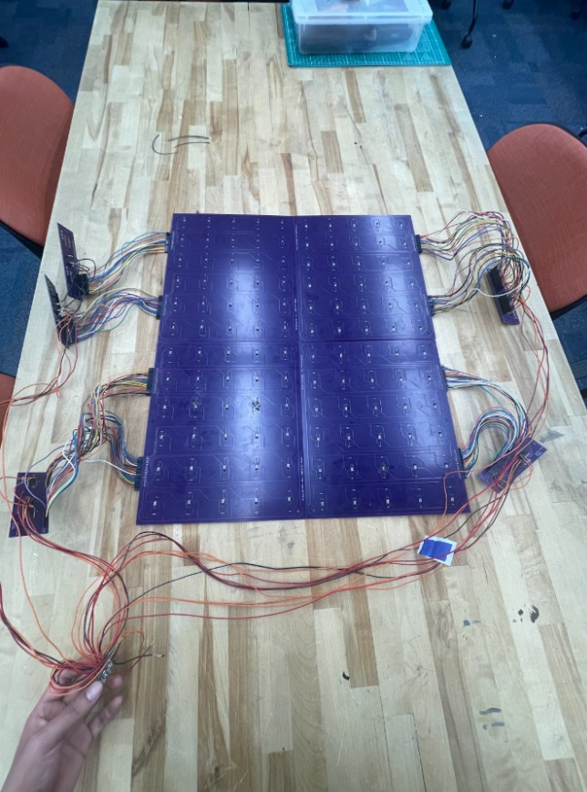
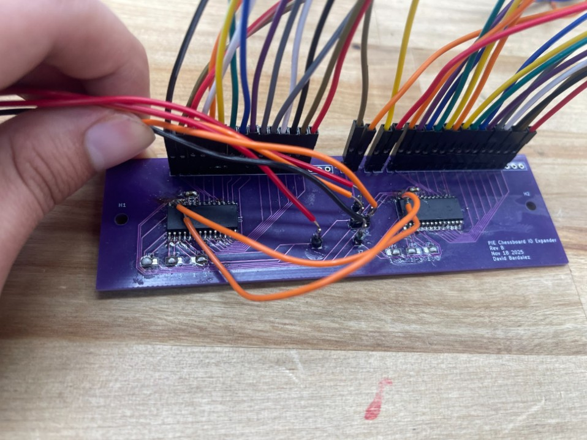
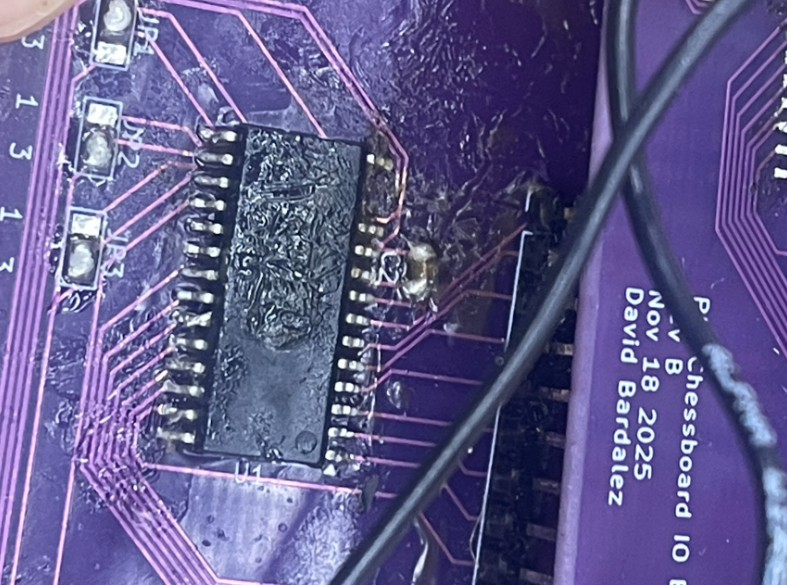

Gantry Control
We utilize 2 microcontrollers in this project, A Raspberry Pi for computationally-heavy tasks and an Arduino Uno R3 for GRBL G-code execution. The microcontrollers are connected with a USB-A to USB-B serial cable for communication. The Raspberry Pi has a dedicated 5V 3A power supply, and the Arduino has a dedicated 9V 1A power supply to avoid brownouts. The Pi’s GPIO pins are used for servo control, while all of the Arduino pins are dedicated to various GRBL inputs.
On the Pi, we utilize 7 pins, a 5V supply, 3 GND pins, and GPIO 17, 22, and 27 to control the servo and turn indicator LEDs. The pigpio library and daemon ensure smooth control signals for these components
On the Arduino, we utilize digital pins 2, 3, 5, and 6 for our motor control. Our Core-XY gantry doesn’t have a Z-axis, so none of those pins are needed for our implementation. To ensure our gantry stays within its operational limits, we have 4 limit switches, 1 on each end of both axes. The limit switch circuits plug into digital pins 9 and 10 alongside a ground pin. The switches are wired in series to simplify the configuration as much as possible. A 10 μF capacitor is also added to absorb voltage spikes and prevent false triggers.
The GRBL step pins (2 and 3) and direction pins (5 and 6) connect to the step and direction inputs on the 2 TB6600 motor controllers. Each motor controller is wired to a NEMA-17 stepper motor. The motor controllers receive power from a 12V 2A power supply, which is fed to the motors to cause movement.
Gantry Control Circuit
Sensing
To let the Raspberry Pi determine which chess squares are occupied, we use Hall-effect sensors. We place one sensor under the center of each square; when a piece (with a small magnet) is on that square, the sensor detects the magnetic field. The sensor outputs are read through an I/O expander, which communicates the occupancy data to the Arduino R4 over I²C. Because our PCB manufacturer had a minimum order quantity of five boards per design, we split both the Hall-effect sensor array and the I/O expander system into four matching quadrant PCBs to keep the design modular and meet the order minimum, even though this increased the number of inter-board connections and made the wiring more complex.
We designed a set of PCBs with a Hall-effect sensor (US5881LUA-AAA-000-BU) placed at the center of each 2 in × 2 in tile so each square can be sensed consistently. Using a two-layer PCB kept the routing organized: we ran a 5 V power rail around the perimeter and then branched inward to supply each sensor. This layout also left clear routing space for each sensor’s output signal, which is routed to the 1×18 header pins and then to our I/O expander board. Since the full board consists of 120 squares, we split our original idea of one large PCB into four smaller PCBs, each containing 30 Hall-effect sensors, that mount in the four corners of the board.
The board layout included 30 Hall-effect sensor circuits, each with a 10 kΩ pull-up resistor to bias the open-drain output to a stable logic HIGH and a 0.1 µF decoupling capacitor across VCC and GND to reduce supply noise and improve signal stability. Each sensor output was routed to the 18-pin connector, which also carried 5 V and ground from the I/O expander. Because this PCB was designed early in the process, we added four mounting holes, one in each corner, but later changes to the overall board design meant these mounts were not used in the final assembly.
Our I/O expander board served as the interface between the Hall-effect sensor boards and the Arduino by taking each Hall sensor output line and routing it into an MCP23017-E/SO GPIO pin (on either the GPA or GPB ports). This same board also distributed 5 V and GND to power the Hall-effect sensor boards. Because each MCP23017 provides 16 GPIO pins, we used two MCP23017s per I/O expander board, allowing us to handle 30 sensors per quadrant by routing 15 sensor outputs to the first expander and 15 to the second, which also made indexing easier since each expander consistently corresponded to a fixed region of the board (e.g., the first three columns in the board orientation shown). Each MCP23017 included its own 0.1 µF decoupling capacitor for supply stability, and we added 3-pad solder jumpers on A0, A1, and A2 so that, because we ordered five identical copies of the same PCB, we could set each expander to whatever I²C address we needed; with these address pins, each expander could be configured anywhere from 0x20 to 0x27. We also routed the RESET pin so the expanders could be manually reset if anything went wrong by briefly pulling RESET to GND, and to simplify I²C wiring we tied the SDA lines together and the SCL lines together and then routed them out to our perforated protoboard, which connected onward to the Arduino.
We used a perforated protoboard as a central wiring hub so the Arduino could interface with all Hall-effect sensors. The Arduino’s four shared nets—5 V, GND, SDA, and SCL—were routed onto the protoboard and then distributed to each I/O expander board so all expanders shared the same I²C bus and power rails. The larger number of inter-board connections came primarily from splitting the system into multiple PCBs (quadrants), rather than from the protoboard itself.
Prototype assembly showing the four quadrant Hall-sensor PCBs wired to the I/O expander boards with shared 5 V, GND, SDA, and SCL connections on a perforated protoboard.
Major Challenges
Early in this project, we were considering the use of an electromagnet to control piece movement. This was abandoned early in favor of a servo rack and pinion system. We moved away from the electromagnet for 2 reasons:
- Additional Control Components - Electromagnets are on when they receive power and off when no power is flowing. This means that controlling an electromagnet on a microcontroller requires a MOSFET and a flyback diode in addition to the electromagnet itself. This added additional costs and components to consider. Instead, a servo can be controlled as a standalone component, simplifying the circuit.
- Hall Effect Interference - Electromagnets have residual fields for a short time after losing power. If we took Hall-effect readings too quickly after shutting off the electromagnet, we may have still tripped a sensor to report a piece when there was none
- Swapped SDA and SCL lines on the PCB — After assembling the boards, we noticed the Arduino could consistently detect the right-side MCP23017 I/O expander on the I²C bus, but the left-side expander would not ACK at its address. We initially suspected soldering issues, so we reflowed the pins and checked continuity with a multimeter, but the problem persisted. After reviewing the KiCad files again, we found the root cause: the left expander’s SDA and SCL nets were swapped as its SDA pin was routed to the board’s SCL line, and its SCL pin was routed to the board’s SDA line. To avoid a PCB respin, we implemented a hardware workaround by soldering jumper wires from the miswired pins to the correct I²C nets (tapping the working SDA/SCL lines on the other expander). We also mechanically isolated the miswired pins from their pads to prevent reconnecting to the wrong net. As shown in the photo, the two orange jumper wires cross-connect the left expander to the correct I²C lines, restoring communication while the device still uses its own I²C address. 
- Ripped SDA pin from the I/O expander — While soldering jumper wires to reroute the miswired I²C lines, one of the MCP23017’s SDA pins physically tore off the left I/O expander, which made that chip unusable. To recover, we switched to a spare I/O expander board and used it to read the 18 Hall-effect sensor outputs that had been assigned to the damaged side of the system. To avoid adding additional long runs back to the protoboard, we then tied the new board’s SDA and SCL lines into the existing I²C bus by connecting them to the old PCB’s SDA/SCL lines, keeping the overall wiring changes minimal. 